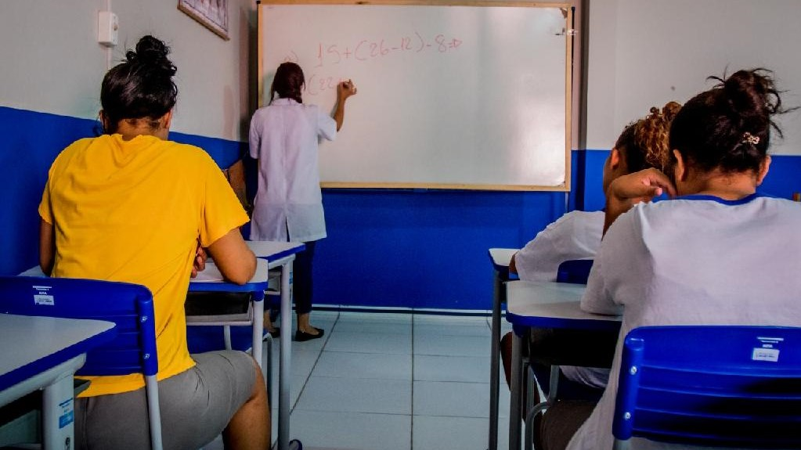
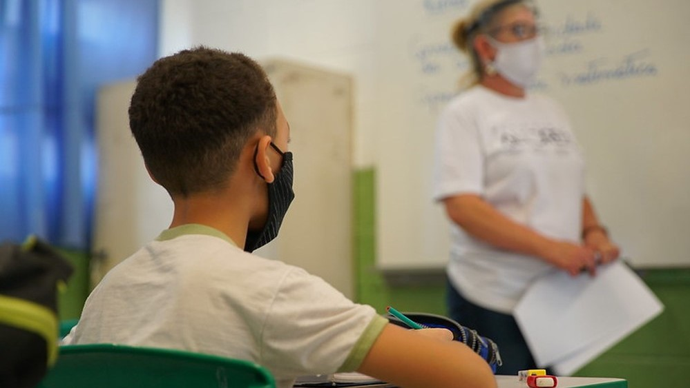

SOBRE
Mudanças na educação prisional visam melhorar gestão e parte pedagógica
A educação no sistema prisional, na modalidade Jovens e Adultos (EJA), passa por reorganização neste ano, por determinação da Secretaria de Estado de Educação (Seduc-MT), com o objetivo de promover melhorias na gestão e, principalmente, na parte pedagógica.
...
Bahia tira nota 0 e fica em último lugar em índice de educação pública à distância
A Bahia ficou em último lugar num ranking brasileiro de educação pública à distância durante a pandemia elaborado pela Fundação Getúlio Vargas. Salvador, por sua vez, ocupa o primeiro lugar entre as capitais brasileiras, acima da média de 1,95. O estudo se refere ao recorte entre março e outubro de 2020.
...
Justiça suspende retorno de aulas presenciais na educação infantil da rede pública municipal da cidade de SP
O Tribunal de Justiça de São Paulo concedeu, na noite desta sexta-feira (29), uma liminar que suspende o retorno das aulas presenciais apenas na educação infantil da rede pública municipal da cidade de São Paulo.